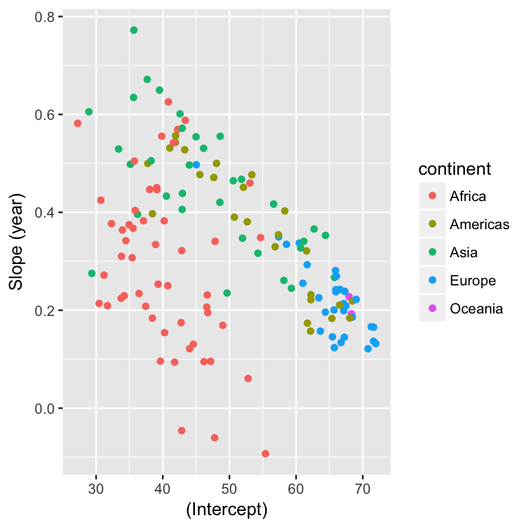

Stat 585 - Working with lists
Heike Hofmann
Lists
- are most general form of objects in R
[ accesses sub lists[[ accesses elements- for well-structured lists more powerful tools:
map (purrr)
Data accessibility
Part of a quantitative world is our responsibility to make data accessible
- Hans Rosling (2017✝) was at the fore-front of providing World Health Statistics (gapminder)
- in R through the package
gapminder by Jenny Bryan
- Hans Rosling’s TED talk
First Look: US only
library(gapminder)
gapminder %>% filter(country == "United States") %>%
ggplot(aes(x = year, y =lifeExp)) + geom_line() + geom_point()
How would you describe this plot?
First Model: US only
gapminder %>% filter(country == "United States") %>%
ggplot(aes(x = year, y =lifeExp)) + geom_line() + geom_point() +
geom_smooth(method="lm", se=FALSE)
Model of the US
lm(lifeExp~I(year-1950), data = filter(gapminder, country == "United States"))
##
## Call:
## lm(formula = lifeExp ~ I(year - 1950), data = filter(gapminder,
## country == "United States"))
##
## Coefficients:
## (Intercept) I(year - 1950)
## 68.0455 0.1842
First Look: All countries
gapminder %>%
ggplot(aes(x = year, y =lifeExp)) +
geom_line(aes(group = country, colour=continent))
Split-Apply-Combine for lists
- both summarize and mutate need vector objects as result, but model results are usually more complicated
nest creates list of data frames (split)map applies function to list object (apply)unnest moves list results back into a data frame (combine)
nest
nest is a function in tidyr: creates variable datadata is variable of data frames
gapminder2 <- gapminder %>% mutate(year = year-1950)
countryList <- gapminder2 %>% nest(-country, -continent)
countryList
## # A tibble: 142 × 3
## country continent data
## <fctr> <fctr> <list>
## 1 Afghanistan Asia <tibble [12 × 4]>
## 2 Albania Europe <tibble [12 × 4]>
## 3 Algeria Africa <tibble [12 × 4]>
## 4 Angola Africa <tibble [12 × 4]>
## 5 Argentina Americas <tibble [12 × 4]>
## 6 Australia Oceania <tibble [12 × 4]>
## 7 Austria Europe <tibble [12 × 4]>
## 8 Bahrain Asia <tibble [12 × 4]>
## 9 Bangladesh Asia <tibble [12 × 4]>
## 10 Belgium Europe <tibble [12 × 4]>
## # ... with 132 more rows
Nested data frames
Each element of the data variable in countryList is a dataset:
countryList$data[[10]] %>% arrange(year)
## # A tibble: 12 × 4
## year lifeExp pop gdpPercap
## <dbl> <dbl> <int> <dbl>
## 1 2 68.000 8730405 8343.105
## 2 7 69.240 8989111 9714.961
## 3 12 70.250 9218400 10991.207
## 4 17 70.940 9556500 13149.041
## 5 22 71.440 9709100 16672.144
## 6 27 72.800 9821800 19117.974
## 7 32 73.930 9856303 20979.846
## 8 37 75.350 9870200 22525.563
## 9 42 76.460 10045622 25575.571
## 10 47 77.530 10199787 27561.197
## 11 52 78.320 10311970 30485.884
## 12 57 79.441 10392226 33692.605
Nested data frames (cont’d)
We can use the list elements as data inputs:
lm(lifeExp~year, data=countryList$data[[10]])
##
## Call:
## lm(formula = lifeExp ~ year, data = countryList$data[[10]])
##
## Coefficients:
## (Intercept) year
## 67.4738 0.2091
Your Turn (8 mins)

The goal of this your turn is for you to try out nesting operations on various datasets.
- Nest the
ChickWeight data in different ways: what are the results of
ChickWeight %>% nest(-Diet)
ChickWeight %>% nest(weight)
ChickWeight %>% nest(Time, weight)
chickwts is yet another data set on feeding chicks. Nest it by different feeds. nest respects grouping structure introduced by group_by. Use group_by to nest the iris dataset by species.
Fitting multiple models
Now we are using the map function in the package purrr.
map allows us to apply a function to each element of a list.
myfit <- function (dframe) {
lm(lifeExp ~ year, data = dframe)
}
countryList <- countryList %>% mutate(
model = purrr::map(data, myfit)
)
head(countryList)
## # A tibble: 6 × 4
## country continent data model
## <fctr> <fctr> <list> <list>
## 1 Afghanistan Asia <tibble [12 × 4]> <S3: lm>
## 2 Albania Europe <tibble [12 × 4]> <S3: lm>
## 3 Algeria Africa <tibble [12 × 4]> <S3: lm>
## 4 Angola Africa <tibble [12 × 4]> <S3: lm>
## 5 Argentina Americas <tibble [12 × 4]> <S3: lm>
## 6 Australia Oceania <tibble [12 × 4]> <S3: lm>
Fitting multiple models - Alternative
map allows us to use a formula instead of a function (creates anonymous function on the fly):
countryList <- countryList %>% mutate(
model = purrr::map(data, ~ lm(lifeExp~year, data = .))
)
head(countryList)
## # A tibble: 6 × 4
## country continent data model
## <fctr> <fctr> <list> <list>
## 1 Afghanistan Asia <tibble [12 × 4]> <S3: lm>
## 2 Albania Europe <tibble [12 × 4]> <S3: lm>
## 3 Algeria Africa <tibble [12 × 4]> <S3: lm>
## 4 Angola Africa <tibble [12 × 4]> <S3: lm>
## 5 Argentina Americas <tibble [12 × 4]> <S3: lm>
## 6 Australia Oceania <tibble [12 × 4]> <S3: lm>
The broom package
Now we have all these models …
The broom package
broom allows to extract values from models on three levels:
- for each model:
broom::glance
- for each coefficient in the model:
broom::tidy
- for each value in the dataset:
broom::augment
library(broom)
broom::glance(countryList$model[[1]])
## r.squared adj.r.squared sigma statistic p.value df logLik
## 1 0.9477123 0.9424835 1.222788 181.2494 9.835213e-08 2 -18.34693
## AIC BIC deviance df.residual
## 1 42.69387 44.14859 14.9521 10
broom::tidy(countryList$model[[1]])
## term estimate std.error statistic p.value
## 1 (Intercept) 29.3566375 0.69898128 41.99918 1.404235e-12
## 2 year 0.2753287 0.02045093 13.46289 9.835213e-08
broom::augment(countryList$model[[1]])
## lifeExp year .fitted .se.fit .resid .hat .sigma
## 1 28.801 2 29.90729 0.6639995 -1.10629487 0.29487179 1.211813
## 2 30.332 7 31.28394 0.5799442 -0.95193823 0.22494172 1.237512
## 3 31.997 12 32.66058 0.5026799 -0.66358159 0.16899767 1.265886
## 4 34.020 17 34.03722 0.4358337 -0.01722494 0.12703963 1.288917
## 5 36.088 22 35.41387 0.3848726 0.67413170 0.09906760 1.267003
## 6 38.438 27 36.79051 0.3566719 1.64748834 0.08508159 1.154002
## 7 39.854 32 38.16716 0.3566719 1.68684499 0.08508159 1.147076
## 8 40.822 37 39.54380 0.3848726 1.27820163 0.09906760 1.208243
## 9 41.674 42 40.92044 0.4358337 0.75355828 0.12703963 1.260583
## 10 41.763 47 42.29709 0.5026799 -0.53408508 0.16899767 1.274051
## 11 42.129 52 43.67373 0.5799442 -1.54472844 0.22494172 1.148593
## 12 43.828 57 45.05037 0.6639995 -1.22237179 0.29487179 1.194109
## .cooksd .std.resid
## 1 2.427205e-01 -1.07742164
## 2 1.134714e-01 -0.88428127
## 3 3.603567e-02 -0.59530844
## 4 1.653992e-05 -0.01507681
## 5 1.854831e-02 0.58082792
## 6 9.225358e-02 1.40857509
## 7 9.671389e-02 1.44222437
## 8 6.668277e-02 1.10129103
## 9 3.165567e-02 0.65958143
## 10 2.334344e-02 -0.47913530
## 11 2.987950e-01 -1.43494020
## 12 2.963271e-01 -1.19046907
Ready to fly!
The opposite of nest is unnest:
coefs <- countryList %>% select(country, continent, coefs) %>%
unnest()
coefs
## # A tibble: 284 × 7
## country continent term estimate std.error statistic
## <fctr> <fctr> <chr> <dbl> <dbl> <dbl>
## 1 Afghanistan Asia (Intercept) 29.3566375 0.698981278 41.999176
## 2 Afghanistan Asia year 0.2753287 0.020450934 13.462890
## 3 Albania Europe (Intercept) 58.5597618 1.133575812 51.659325
## 4 Albania Europe year 0.3346832 0.033166387 10.091036
## 5 Algeria Africa (Intercept) 42.2364149 0.756269040 55.848399
## 6 Algeria Africa year 0.5692797 0.022127070 25.727749
## 7 Angola Africa (Intercept) 31.7079741 0.804287463 39.423683
## 8 Angola Africa year 0.2093399 0.023532003 8.895964
## 9 Argentina Americas (Intercept) 62.2250191 0.167091314 372.401279
## 10 Argentina Americas year 0.2317084 0.004888791 47.395847
## # ... with 274 more rows, and 1 more variables: p.value <dbl>
Reshaping
coefsLong <- coefs %>% gather(key="Statistic", value = "Value", 4:7)
coefsTerm <- coefsLong %>% spread(key="term", value="Value")
coefsTerm %>% filter(Statistic == "estimate") %>%
ggplot(aes(x = `(Intercept)`, y = year)) +
geom_point(aes(colour = continent)) + ylab("Slope (year)")

Your turn (10 mins)
- Extract other model diagnostics: find the R square value for each model. Draw a visualization of R square by country - can you see a pattern? What does the pattern mean?
- Extract residuals and fitted values for each of the models and store them in a dataset together with country and continent information.
- Plot residuals across the years and fit a smooth. What does the pattern mean?
- Include predicted Life Expectancy for 2017 into the data set. Then compare predicted life expectancy in 2017 with that in 1950.